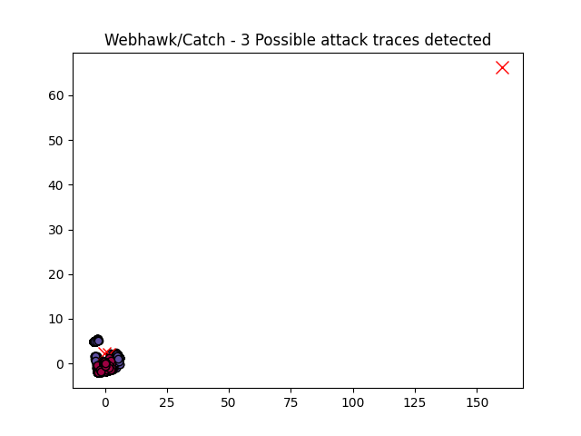

Webhawk Catch ReportUnsupervised learning Web logs/OS processes attack detection. Date: 17/06/25 at 06:26:30 GMTLog file: /Users/walid/Downloads/access.log.2025-04-22 Log type: apache logs Findings: 8 |
 |
| Severity | Related CVE(s) | Line# | LLM Insights | Log line |
| High | CVE-2003-1498 CVE-2003-1240 CVE-2003-1216 CVE-2003-0614 CVE-2002-1457 CVE-2002-2255 CVE-2002-1853 CVE-2002-1662 CVE-2002-1131 |
1692 | N/A | 198.2.229.241 - - [22/Apr/2025:19:16:55 -0700] "GET /plus/search.php?keyword=xxx&arrs1%5B%5D=99&arrs1%5B%5D=102&arrs1%5B%5D=103&arrs1%5B%5D=95&arrs1%5B%5D=100&arrs1%5B%5D=102&arrs1%5B%5D=95&arrs1%5B%5D=115&arrs1%5B%5D=116&arrs1%5B%5D=121&arrs1%5B%5D=108&arrs1%5B%5D=101&arrs2%5B%5D=47&arrs2%5B%5D=47&arrs2%5B%5D=46&arrs2%5B%5D=46&arrs2%5B%5D=47&arrs2%5B%5D=46&arrs2%5B%5D=46&arrs2%5B%5D=47&arrs2%5B%5D=105&arrs2%5B%5D=110&arrs2%5B%5D=99&arrs2%5B%5D=108&arrs2%5B%5D=117&arrs2%5B%5D=100&arrs2%5B%5D=101&arrs2%5B%5D=47&arrs2%5B%5D=99&arrs2%5B%5D=111&arrs2%5B%5D=109&arrs2%5B%5D=109&arrs2%5B%5D=111&arrs2%5B%5D=110&arrs2%5B%5D=46&arrs2%5B%5D=105&arrs2%5B%5D=110&arrs2%5B%5D=99&arrs2%5B%5D=46&arrs2%5B%5D=112&arrs2%5B%5D=104&arrs2%5B%5D=112&arrs2%5B%5D=0 HTTP/1.1" 404 328 "-" "-" |
| High | CVE-2012-3588 CVE-2007-5389 CVE-2007-5318 CVE-2007-2861 CVE-2007-1141 CVE-2006-4889 CVE-2006-2032 CVE-2006-2029 CVE-2006-0723 |
3491 | N/A | 119.42.146.66 - - [22/Apr/2025:20:30:50 -0700] "POST /manage/webUploader/preview.php HTTP/1.1" 404 250 "-" "Mozilla/5.0 AppleWebKit/601.1.46 (KHTML# like Gecko) Version/9.0" |
| High | CVE-2012-3588 CVE-2007-5389 CVE-2007-5318 CVE-2007-2861 CVE-2007-1141 CVE-2006-4889 CVE-2006-2032 CVE-2006-2029 CVE-2006-0723 |
3492 | N/A | 119.42.146.66 - - [22/Apr/2025:20:30:50 -0700] "POST /mobile/script/webupload/server/preview.php HTTP/1.1" 404 250 "-" "Mozilla/5.0 AppleWebKit/601.1.46 (KHTML# like Gecko) Version/9.0" |
| Medium | No CVE found | 3480 | N/A | 119.42.146.66 - - [22/Apr/2025:20:30:47 -0700] "POST /Public/admin/webuploader/server/preview.php HTTP/1.1" 404 284 "-" "Mozilla/5.0 AppleWebKit/601.1.46 (KHTML# like Gecko) Version/9.0" |
| Medium | No CVE found | 3481 | N/A | 119.42.146.66 - - [22/Apr/2025:20:30:47 -0700] "POST /lib/webuploader/0.1.5/server/preview.php HTTP/1.1" 404 250 "-" "Mozilla/5.0 AppleWebKit/601.1.46 (KHTML# like Gecko) Version/9.0" |
| Medium | No CVE found | 3486 | N/A | 119.42.146.66 - - [22/Apr/2025:20:30:48 -0700] "POST /Public/webuploader/0.1.5/server/preview.php HTTP/1.1" 404 250 "-" "Mozilla/5.0 AppleWebKit/601.1.46 (KHTML# like Gecko) Version/9.0" |
| Medium | No CVE found | 3487 | N/A | 119.42.146.66 - - [22/Apr/2025:20:30:49 -0700] "POST /static/lib/webuploader/0.1.5/server/preview.php HTTP/1.1" 404 250 "-" "Mozilla/5.0 AppleWebKit/601.1.46 (KHTML# like Gecko) Version/9.0" |
| Medium | No CVE found | 3488 | N/A | 119.42.146.66 - - [22/Apr/2025:20:30:49 -0700] "POST /admin/lib/webuploader/0.1.5/server/preview.php HTTP/1.1" 404 250 "-" "Mozilla/5.0 AppleWebKit/601.1.46 (KHTML# like Gecko) Version/9.0" |